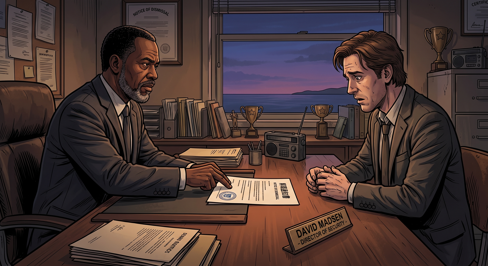

解職(倒敘)

一、被攤開的監控記錄
暗房事件平息後不久,新校董會接管校務,進行了一輪徹底的內部審查——所有安保系統的操作日誌、監控錄影的存取權限,全部被拉出來重新檢視。
David 這幾年私自在校園各處加裝的隱蔽攝影機,連同那些沒有經過任何授權、單方面針對女學生宿舍區的長期監控紀錄,毫無保留地攤在了審查委員會面前。
「Madsen 先生,」負責這次審查的律師,語氣公事公辦,「這些設備的安裝,沒有任何一份正式的書面授權文件。」
David 坐在會議桌另一頭,沒有辯解,只是沉默地聽著。
二、無可迴避的解僱
「妳的動機,」律師繼續說,語氣稍稍緩和了一些,「調查小組理解,是出於一種過度的保護欲,並非惡意窺探。但無論動機如何,長期、未經授權地監控未成年學生的私人空間,已經構成嚴重違反校規與隱私法規的行為。」
「校方,」她頓了頓,把一份文件推到桌子中央,「必須正式解除你的安保主任職務。」
David 低頭看著那份解職通知書,久久沒有伸手去接。
「我知道。」他終於開口,聲音有些沙啞,「換作是我審查別人的紀錄,我也會做出同樣的決定。」
三、戰功與代價的並存
解職程序走完後,另一份文件被放到了桌上——這一次,遞文件的人換成了州警與聯邦調查局的聯合代表。
「儘管如此,」對方的語氣裡帶著一絲鄭重,「你在暗房事件當晚,強行突破現場、協助制服嫌犯、並且第一時間保存了關鍵的 Prescott 家族涉案證據——這些行為,對整起案件的偵破,起到了決定性的作用。」
「州警與聯邦調查局,」他繼續說,「決定授予你正式的協勤嘉獎,並且,基於你當時行動的合法性與正當防衛性質,你不會面臨任何刑事起訴。」
David 接過那份嘉獎文件,和先前那份解職通知,一起收進公事包裡——一份代表著失去,一份代表著功過相抵的平反,兩份文件,安靜地躺在同一個包裡。
四、走出校門的那天
收拾完辦公室裡最後一點私人物品,David 提著紙箱,走出布萊克威爾學院的大門。
沒有歡送會,沒有掌聲,只有幾個以前共事過的保全同事,遠遠地朝他點了點頭,算是一種心照不宣的告別。
他在校門口站了一會兒,回頭望了一眼那棟他巡邏了將近十年的教學樓,才轉身,朝著自己的車走去。
五、家裡的沉默晚餐
那天晚上,David 破天荒地沒有像往常一樣,一進門就開始念叨各種安全注意事項,只是安靜地坐在餐桌前,扒著飯,一句話也沒說。
Joyce 察覺到他的異樣,伸手輕輕按住他的手背。
「怎麼了?」
「我今天,」David 放下筷子,語氣裡帶著一絲罕見的疲憊,「被學校正式解職了。」
Joyce 愣了一下,沒有立刻說話,只是把手握得更緊了些。
Chloe 坐在對面,原本想像往常一樣嘴賤兩句,話到嘴邊,卻莫名說不出口——她看著這個曾經讓她恨得牙癢癢、如今卻在暗房那晚不顧一切衝進去救她的男人,忽然覺得,自己該說點什麼。
「老兵,」她清了清嗓子,語氣少見地認真,「你那些監控是挺變態的,但……那天要不是你衝進去,我可能就不在這裡跟你吃飯了。」
David 抬起頭,看著她,眼眶微微泛紅,卻只是笑了笑,沒有多說什麼。
六、轉型
失去正式職位後的 David,沒有頹廢太久。
憑著退伍軍人的津貼,加上他多年累積的安保與電路維修經驗,他很快考取了獨立顧問執照,在鎮上開了一間小型的私人安全諮詢工作室——不再有任何一份正式的僱傭合約,取而代之的,是一份又一份按次計價的委託案。
沒有了那身制服和「主任」的頭銜,David 反而顯得輕鬆了不少。他開始有更多時間,窩在自家車庫裡,跟 Chloe 一起研究引擎和線路,兩人雖然照舊三兩句就能拌起嘴來,但那種劍拔弩張的緊繃感,終於一點一點,鬆懈了下來。